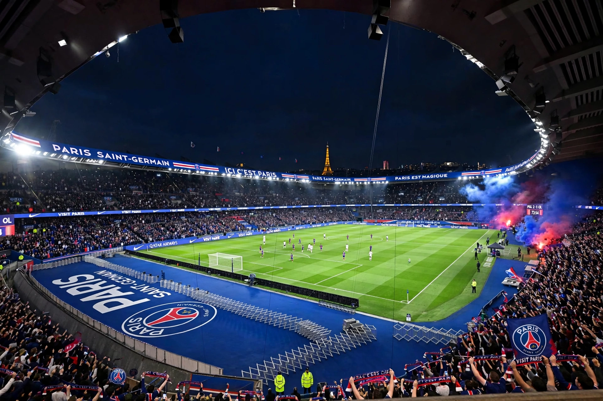

From Wikipedia, the free encyclopedia
| Paris Saint-Germain Football Club | |
| Nickname(s) | Les Parisiens; Les Rouge-et-Bleu (The Red-and-Blues) |
|---|---|
| Founded | 12 August 1970 (merger of Paris FC and Stade Saint-Germain) |
| Ground | Parc des Princes, Paris (capacity c. 48,000) |
| Owner | Qatar Sports Investments (majority, since 2011) |
| League | Ligue 1 |
| Honours (summary) | Record number of French league titles (13 by 2025) and Coupe de France titles; UEFA Cup Winners' Cup 1996; UEFA Champions League winners 2025 |

Paris Saint-Germain Football Club (commonly Paris Saint-Germain, Paris SG, or simply PSG) is a French professional football club based in Paris. Founded in 1970 by the merger of Paris FC and Stade Saint-Germain, the club plays in Ligue 1, the top tier of French football, and has become the most successful club in French football history, with a record haul of league championships, Coupe de France, and Coupe de la Ligue titles. PSG's fierce rivalry with Olympique de Marseille is known as Le Classique. Since its takeover by Qatar Sports Investments in 2011, the club has become one of the richest and most globally prominent in the world game, winning its first UEFA Champions League title in 2025.
The newly merged club won promotion to the top flight in 1971; after an administrative split (the Paris FC faction broke away), PSG rebuilt and, under president Daniel Hechter — designer of the club's iconic blue shirt with central red-and-white stripe — and later Francis Borelli, won its first major trophies: consecutive Coupe de France titles in 1982 and 1983 and a first league championship in 1986 under Gérard Houllier. The Canal+ era (1991–2006) brought a second league title (1994), regular European campaigns, and the club's first European trophy, the UEFA Cup Winners' Cup of 1996, earned by a side featuring Raí and Youri Djorkaeff under Luis Fernández. A leaner decade followed under Colony Capital's ownership.
Qatar Sports Investments' takeover in 2011 transformed the club's finances and ambitions. Successive record signings — Zlatan Ibrahimović, Thiago Silva, Edinson Cavani, then the 2017 double signing of Neymar (a world-record €222 million) and Kylian Mbappé, and Lionel Messi in 2021 — made PSG the dominant force in French football, winning the Ligue 1 title in most seasons of the era and repeated domestic trebles and quadruples. European success long eluded them, most painfully in the lost 2020 Champions League final against Bayern Munich, until Luis Enrique's younger, restructured side won the club's first European Cup in 2025, thrashing Inter Milan 5–0 in the Munich final — the largest margin in a European Cup final.
PSG has played at the Parc des Princes since 1974; the stadium, near the Bois de Boulogne, is famed for the Kop of Boulogne and the Auteuil end, and the club has long debated expanding it or building a larger ground. The crest features the Eiffel Tower and the fleur-de-lis of Saint-Germain-en-Laye, the club's original home. The club also fields a leading women's team and elite handball and judo sections under the PSG brand.